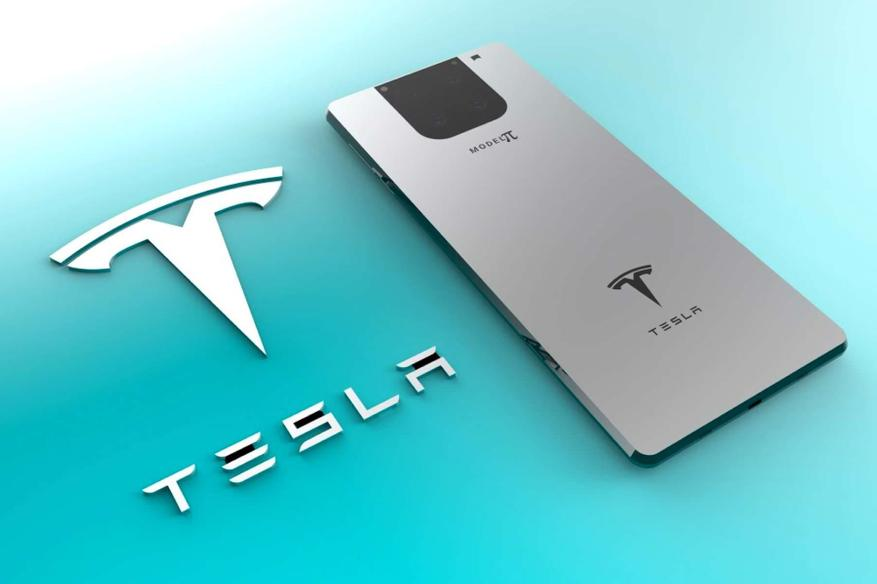
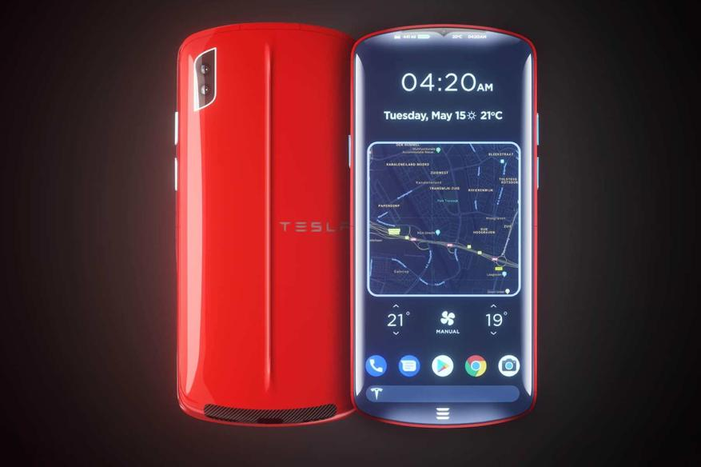
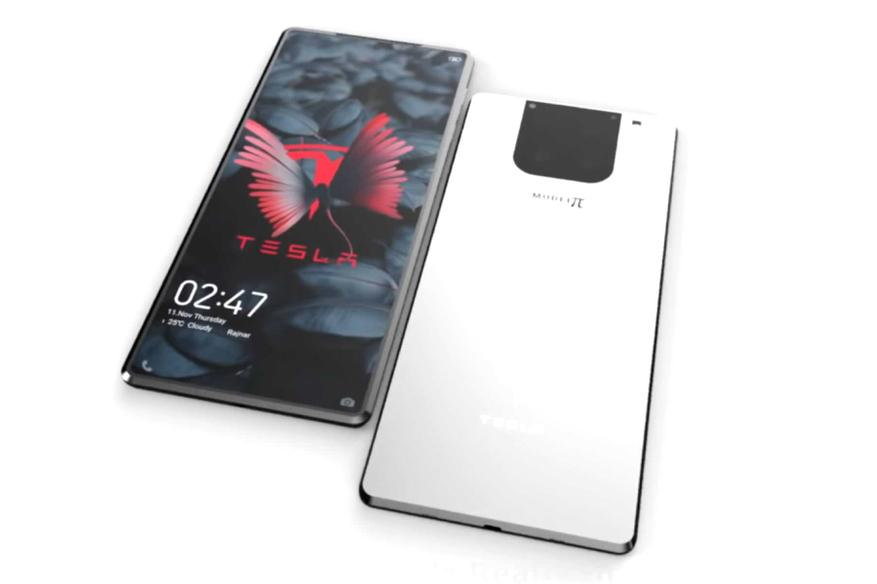

Elon Musk surprised everyone again. Presented Tesla Phone, waiting for the start of sales at the end of 2022
MacRumors: Apple will revise plans for the iPhone 15 line due to the failure of the iPhone 14 Plus
In 2022, the world will see a new product from Elon Musk - Tesla Phone. And it will not just be a smartphone that can compete with all the giants dominating the market today, but really the best smartphone that in all likelihood will leave them a few steps behind.
Many people will definitely decide to get a Tesla Phone, because it will be a unique smartphone, with features that have never been available in existing smartphones today. Let's see what standard features it has and what's unique about it.

Specifications:
Qualcomm Snapdragon 8 series processor;
The amount of RAM is 16 GB;
Built-in memory - 512 GB / 1 TB;
USB Type-C Fast Charging - 100W;
Graphene battery - capacity unknown yet;
Charge rate from 0% to 100% - less than 10 minutes;
IP68 waterproof - submersible up to 2 meters.
Tesla Phone Unique Features

Elon Musk himself was directly involved in the development of the Tesla Phone and, of course, the smartphone has some unique features. A solar panel is located at the back of the phone, which allows you to charge the device by 20% in 30 minutes under the sun. So, for example, while traveling far away from civilization, not being able to charge the phone, you can always be in touch by simply exposing the phone to the sun's rays. None of the existing flagships can boast of such an opportunity.

Elon Musk's space company SpaceX has launched the Starlink project to equip the planet's surface with high-speed Internet via satellites. Tesla Phone has the ability to connect directly to this network and use high-speed satellite Internet from anywhere in the world. At the same time, for smartphone buyers, this network will be available free of charge and without time limits.
The full presentation of Tesla Phone will take place later, and the start of sales is expected towards the end of 2022. How much Elon Musk will evaluate his revolutionary novelty is not yet known.